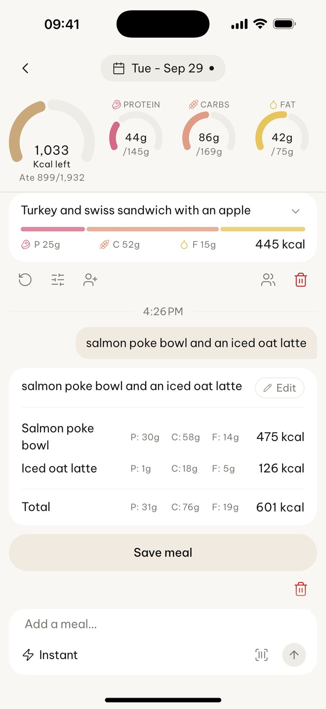
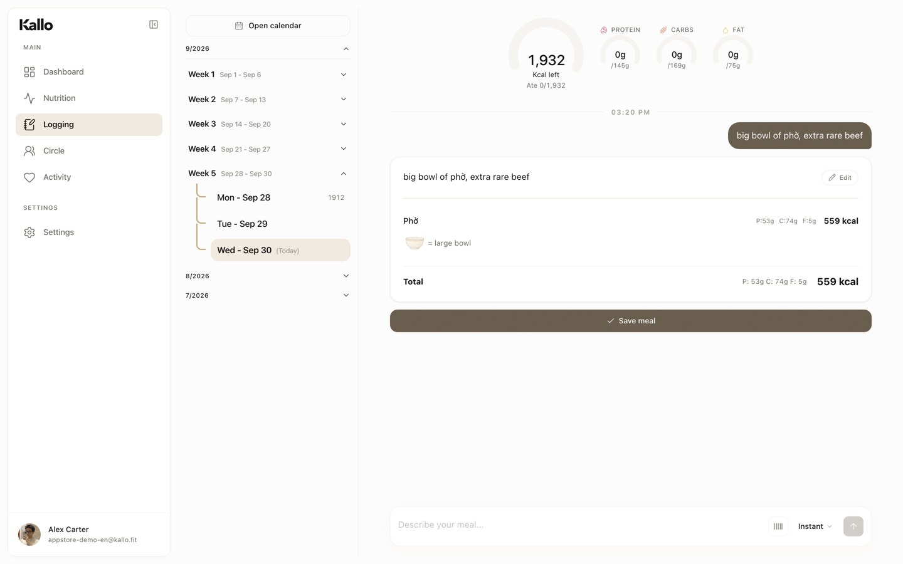

The result card docks into a flat, front-on phone slab rising from the bottom edge. Pull out: the web app floats beside it on the same account, showing the same phở (real captures). The tan squiggle from the working beat draws between them.
Sound: A slow air pass; a soft set-down; a two-note chime as the squiggle lands.
From: OpenAI Codex mobile (frosted slab, front-on) · Claude Dispatch (the product’s own squiggle joins phone and laptop).